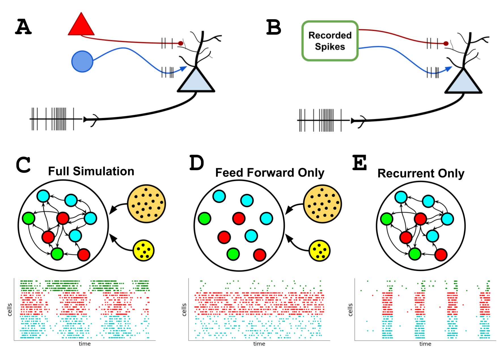

Replaying Parts of a Simulation#
When simulating a bio-realistic network, cells will receive synaptic stimulation from both locally recurrent connections as well as feedforward connections from external inputs. Often when analyzing the results of full network activity we would like to know the contribution of only a subset of the synaptic activity. For example, how much the feedforward synapses, or only recurrent synapses between specific population of cells, contribute to the simulation results. Certain techniques, like running with only a subset of the full network, or using optogenetics/current-clamp to turn on-off subpopulations, can provide useful insights but do not tell the full story of a network simulation.
Instead we can used the BMTK “replay” input module to disentangle subsections of simulation activity from the full network in BioNet/biophysically realistic simulations. The BMTK “replay” module let’s the user take a previous simulation, and replay a simulation using only activity from a subset of the synapses. This can be helpful in parameter tuning and optimization, and for very large networks can provide an efficient manner to replay small subsets of a full network.

[1]:
from bmtk.simulator import bionet
from bmtk.analyzer.spike_trains import plot_raster
Initial Simulation (Generating a Baseline for Synaptic Activity)#
The first step is to take an existing network + simulation or build one from scratch. For more information on how to build and run BioNet simulations please see existing tutorials. For our example we copy the bionet_450cell example network, although any network that is synaptically stimulated will work.
We will run the full network once and save the spike-trains file (see “outputs” section in config.simulation.json) under previous_results/spikes.baseline.h5. This baseline spike-train file will be used when replaying the simulation using only a subset of the full set of synapses.
[2]:
conf = bionet.Config.from_json('bio_disconnected_sims/config.simulation.json')
conf.build_env()
net = bionet.BioNetwork.from_config(conf)
sim = bionet.BioSimulator.from_config(conf, network=net)
sim.run()
2023-01-11 14:45:04,875 [INFO] Created log file
2023-01-11 14:45:05,001 [INFO] Building cells.
2023-01-11 14:45:26,161 [INFO] Building recurrent connections
2023-01-11 14:45:31,537 [INFO] Building virtual cell stimulations for external_spikes
2023-01-11 14:45:32,240 [INFO] Running simulation for 2000.000 ms with the time step 0.100 ms
2023-01-11 14:45:32,241 [INFO] Starting timestep: 0 at t_sim: 0.000 ms
2023-01-11 14:45:32,241 [INFO] Block save every 5000 steps
2023-01-11 14:45:56,556 [INFO] step:5000 t_sim:500.00 ms
2023-01-11 14:46:21,101 [INFO] step:10000 t_sim:1000.00 ms
2023-01-11 14:46:45,735 [INFO] step:15000 t_sim:1500.00 ms
2023-01-11 14:47:11,577 [INFO] step:20000 t_sim:2000.00 ms
2023-01-11 14:47:11,600 [INFO] Simulation completed in 99.36 seconds
[3]:
_ = plot_raster(config_file='bio_disconnected_sims/config.simulation.json', group_by='model_name')
Simulation with Only Feedforward (Virtual) Synaptic Activity#
One useful method for analyzing a full network is to run a simulation with only feedforward virtual networks without any recurrent connections. The network will be still be driven by virtual (pre-defined) spike inputs into the synapses of our primary contingent of cells, but the local cell-to-cell connectivity will be removed. This way we can see how much of our network is driven purely by the outside stimulation.
To run a simulation with virtual stimulation only we only need to edit the “networks” section of our simulation configuration to exclude the recurrent connectivity. Here we make a copy of config.simulation.json which we’ll name “config.simulation_feedforward.json” and update the “networks” sections to remove the recurrent (internal_internal_edges files) connections:
{
"networks": {
"nodes": [
{
"nodes_file": "$NETWORK_DIR/internal_nodes.h5",
"node_types_file": "$NETWORK_DIR/internal_node_types.csv"
},
{
"nodes_file": "$NETWORK_DIR/external_nodes.h5",
"node_types_file": "$NETWORK_DIR/external_node_types.csv"
}
],
"edges": [
{
"edges_file": "$NETWORK_DIR/external_internal_edges.h5",
"edge_types_file": "$NETWORK_DIR/external_internal_edge_types.csv"
}
]
}
}
Also just so we don’t overwrite our previous output we can update the “output” folder where spikes are stored:
{
"output": {
"output_dir": "$BASE_DIR/output_feedforward",
"log_file": "log.txt",
"spikes_file": "spikes.h5"
}
}
Then we can rerun the simulation with feedforward only and plot the results:
[4]:
bionet.reset()
conf = bionet.Config.from_json('bio_disconnected_sims/config.simulation_feedforward.json')
conf.build_env()
net = bionet.BioNetwork.from_config(conf)
sim = bionet.BioSimulator.from_config(conf, network=net)
sim.run()
2023-01-11 14:47:11,973 [INFO] Created log file
Mechanisms already loaded from path: /local1/workspace/bmtk/docs/tutorial/bio_disconnected_sims/components/mechanisms. Aborting.
2023-01-11 14:47:12,004 [INFO] Building cells.
2023-01-11 14:48:16,629 [INFO] Building recurrent connections
2023-01-11 14:48:16,870 [INFO] Building virtual cell stimulations for external_spikes
2023-01-11 14:48:18,247 [INFO] Running simulation for 2000.000 ms with the time step 0.100 ms
2023-01-11 14:48:18,248 [INFO] Starting timestep: 0 at t_sim: 0.000 ms
2023-01-11 14:48:18,249 [INFO] Block save every 5000 steps
2023-01-11 14:48:59,110 [INFO] step:5000 t_sim:500.00 ms
2023-01-11 14:49:40,297 [INFO] step:10000 t_sim:1000.00 ms
2023-01-11 14:50:21,635 [INFO] step:15000 t_sim:1500.00 ms
2023-01-11 14:51:03,666 [INFO] step:20000 t_sim:2000.00 ms
2023-01-11 14:51:03,691 [INFO] Simulation completed in 2.0 minutes, 45.44 seconds
[5]:
_ = plot_raster(config_file='bio_disconnected_sims/config.simulation_feedforward.json', group_by='model_name')
Next we would like to see the contributions of recurrently connectivity on the simulation. Unlike before we can’t just run a simulation with recurrent only connections and no external stimuli. Luckily, we can utilize the previous simulation results saved in the previous_results/spikes.baseline.h5 and the “replay” module in BioNet to rerun a simulation with only recurrent connections acting on our cells.
Simulations with Only Recurrent Synpatic Activity#
Using the previous full simulation output spikes.baseline.h5 spike-train file, we now want to re-run a simulation to see the contributions of only recurrent connections on the total output of the simulation. To do so we just have to make changes to the json configuration files.
The first step is to make a copy of the config.simulation.json file, which we’ll rename to config.simulation_recurrent.json, then update the following sections:
Since we don’t want feedforward virtual stimuli we can remove the external nodes and edges files from the “networks” section:
{
"networks": {
"nodes": [
{
"nodes_file": "$NETWORK_DIR/internal_nodes.h5",
"node_types_file": "$NETWORK_DIR/internal_node_types.csv"
}
]
}
}
For good measure we also want to update the “output” section so that we save the new recurrent-only simulation in a different folder:
{
"output":{
"output_dir": "$BASE_DIR/output_recurrent",
"log_file": "log.txt",
"spikes_file": "spikes.h5"
}
}
And most importantly, we modify the “inputs” to tell BioNet to use the replay module:
{
"inputs": {
"replay_spikes": {
"input_type": "replay_spikes",
"module": "replay",
"spikes_file": "$BASE_DIR/previous_results/spikes.baseline.h5",
"edges": {
"edges_file": "$NETWORK_DIR/internal_internal_edges.h5",
"edge_types_file": "$NETWORK_DIR/internal_internal_edge_types.csv"
}
}
}
}
replay_spikesis the name of the module and which can be set to whatever name we like to describe our simulationinput_typeandmodulewill always need to be set toreplay_spikesandreplay, respectivelyspikes_fileis the name of some previous simulation which BioNet will use to determine when recurrent synapses are activatededgesare the edge/edge-type SONATA files containing recurrent connections
Now we can re-run the simulation and plot the contributions of the recurrent synaptic activity to the full simulation:
[6]:
bionet.reset()
conf = bionet.Config.from_json('bio_disconnected_sims/config.simulation_recurrent.json')
conf.build_env()
net = bionet.BioNetwork.from_config(conf)
sim = bionet.BioSimulator.from_config(conf, network=net)
sim.run()
2023-01-11 14:51:04,025 [INFO] Created log file
Mechanisms already loaded from path: /local1/workspace/bmtk/docs/tutorial/bio_disconnected_sims/components/mechanisms. Aborting.
2023-01-11 14:51:04,042 [INFO] Building cells.
2023-01-11 14:52:45,049 [INFO] Building recurrent connections
2023-01-11 14:52:45,414 [INFO] Building replay connections "replay_spikes"
2023-01-11 14:52:49,981 [INFO] Running simulation for 2000.000 ms with the time step 0.100 ms
2023-01-11 14:52:49,982 [INFO] Starting timestep: 0 at t_sim: 0.000 ms
2023-01-11 14:52:49,983 [INFO] Block save every 5000 steps
2023-01-11 14:53:39,383 [INFO] step:5000 t_sim:500.00 ms
2023-01-11 14:54:28,811 [INFO] step:10000 t_sim:1000.00 ms
2023-01-11 14:55:18,110 [INFO] step:15000 t_sim:1500.00 ms
2023-01-11 14:56:08,024 [INFO] step:20000 t_sim:2000.00 ms
2023-01-11 14:56:08,053 [INFO] Simulation completed in 3.0 minutes, 18.07 seconds
[7]:
_ = plot_raster(config_file='bio_disconnected_sims/config.simulation_recurrent.json', group_by='model_name')
Recreating the Whole Simulation (Validation of Synaptic Activity Summation)#
Now that we can show the contribution of feedforward only synaptic activity and recurrent only synapstic activity, we might expect the two to sum up to the full simulation activity. Indeed we can combine the feedforward inputs with the recurrent replay inputs, which we will do in a new configuration file, config.simulation_recreated.json:
{
"inputs": {
"replay_spikes": {
"input_type": "replay_spikes",
"module": "replay",
"spikes_file": "$BASE_DIR/previous_results/spikes.baseline.h5",
"edges": {
"edges_file": "$NETWORK_DIR/internal_internal_edges.h5",
"edge_types_file": "$NETWORK_DIR/internal_internal_edge_types.csv"
}
},
"external_spikes": {
"input_type": "spikes",
"module": "sonata",
"input_file": "$INPUT_DIR/external_spikes.h5",
"node_set": "external"
}
}
}
And when we run the simulation we see that we can recreate the original simulation results:
[8]:
bionet.reset()
conf = bionet.Config.from_json('bio_disconnected_sims/config.simulation_recreated.json')
conf.build_env()
net = bionet.BioNetwork.from_config(conf)
sim = bionet.BioSimulator.from_config(conf, network=net)
sim.run()
2023-01-11 14:56:08,394 [INFO] Created log file
Mechanisms already loaded from path: /local1/workspace/bmtk/docs/tutorial/bio_disconnected_sims/components/mechanisms. Aborting.
2023-01-11 14:56:08,424 [INFO] Building cells.
2023-01-11 14:58:22,580 [INFO] Building recurrent connections
2023-01-11 14:58:23,046 [INFO] Building replay connections "replay_spikes"
2023-01-11 14:58:27,402 [INFO] Building virtual cell stimulations for external_spikes
2023-01-11 14:58:28,245 [INFO] Running simulation for 2000.000 ms with the time step 0.100 ms
2023-01-11 14:58:28,245 [INFO] Starting timestep: 0 at t_sim: 0.000 ms
2023-01-11 14:58:28,246 [INFO] Block save every 5000 steps
2023-01-11 14:59:41,169 [INFO] step:5000 t_sim:500.00 ms
2023-01-11 15:00:53,811 [INFO] step:10000 t_sim:1000.00 ms
2023-01-11 15:02:07,672 [INFO] step:15000 t_sim:1500.00 ms
2023-01-11 15:03:21,741 [INFO] step:20000 t_sim:2000.00 ms
2023-01-11 15:03:21,809 [INFO] Simulation completed in 4.0 minutes, 53.56 seconds
[9]:
_ = plot_raster(config_file='bio_disconnected_sims/config.simulation_recreated.json', group_by='model_name')

“Replay” Options for Selecting Subnets#
filtering by source/target properties#
By default the replay_spikes input module will resimulate all the possible synapses in the edges files. However sometimes we may only want to replay subsets of recurrent synapses. To do so we can use the optional arguments source_node_set and/or target_node_set to filter out a smaller subset of synapses.
For example, we may want to see the synaptic contribution that the internal excitatory neurons had on the population of “Scnn1a” cells. We can modify the “inputs” section of the config file:
{
"inputs": {
"replay_spikes": {
"input_type": "replay_spikes",
"module": "replay",
"spikes_file": "$BASE_DIR/previous_results/spikes.baseline.h5",
"source_node_set": {
"population": "internal",
"ei": "e"
},
"target_node_set": {
"population": "internal",
"model_name": "Scnn1a"
},
"edges": {
"edges_file": "$NETWORK_DIR/internal_internal_edges.h5",
"edge_types_file": "$NETWORK_DIR/internal_internal_edge_types.csv"
}
}
}
}
source_node_setwill select only thoses synapses in the “internal” populaton of cells that originate from excitatory cells (defined by “ei==e”)target_node_setwill subsequently refine the subset of replayable connections to those which connect to cells with “model_name==Scnn1a”
[10]:
bionet.reset()
conf = bionet.Config.from_json('bio_disconnected_sims/config.simulation_exc2scnn1a.json')
conf.build_env()
net = bionet.BioNetwork.from_config(conf)
sim = bionet.BioSimulator.from_config(conf, network=net)
sim.run()
2023-01-11 15:03:22,195 [INFO] Created log file
Mechanisms already loaded from path: /local1/workspace/bmtk/docs/tutorial/bio_disconnected_sims/components/mechanisms. Aborting.
2023-01-11 15:03:22,210 [INFO] Building cells.
2023-01-11 15:06:16,657 [INFO] Building recurrent connections
2023-01-11 15:06:17,267 [INFO] Building replay connections "replay_spikes"
2023-01-11 15:06:18,419 [INFO] Running simulation for 2000.000 ms with the time step 0.100 ms
2023-01-11 15:06:18,420 [INFO] Starting timestep: 0 at t_sim: 0.000 ms
2023-01-11 15:06:18,421 [INFO] Block save every 5000 steps
2023-01-11 15:07:45,439 [INFO] step:5000 t_sim:500.00 ms
2023-01-11 15:09:12,347 [INFO] step:10000 t_sim:1000.00 ms
2023-01-11 15:10:40,169 [INFO] step:15000 t_sim:1500.00 ms
2023-01-11 15:12:08,931 [INFO] step:20000 t_sim:2000.00 ms
2023-01-11 15:12:08,955 [INFO] Simulation completed in 5.0 minutes, 50.54 seconds
[11]:
_ = plot_raster(config_file='bio_disconnected_sims/config.simulation_exc2scnn1a.json', group_by='model_name')
We may also want to filter only by the pre-synaptic source cell (or post-synaptic target). For example if we want select only recurrent synapses that target either one of our PV cells, no matter the source-cell, we can use the following option:
{
"inputs": {
"replay_spikes": {
"input_type": "replay_spikes",
"module": "replay",
"spikes_file": "$BASE_DIR/previous_results/spikes.h5",
"target_node_set": {
"population": "internal",
"model_name": ["PV1", "PV2"]
},
"edges": {
"edges_file": "$NETWORK_DIR/internal_internal_edges.h5",
"edge_types_file": "$NETWORK_DIR/internal_internal_edge_types.csv"
}
}
}
}
[12]:
bionet.reset()
conf = bionet.Config.from_json('bio_disconnected_sims/config.simulation_pvalb.json')
conf.build_env()
net = bionet.BioNetwork.from_config(conf)
sim = bionet.BioSimulator.from_config(conf, network=net)
sim.run()
2023-01-11 15:12:09,279 [INFO] Created log file
Mechanisms already loaded from path: /local1/workspace/bmtk/docs/tutorial/bio_disconnected_sims/components/mechanisms. Aborting.
2023-01-11 15:12:09,294 [INFO] Building cells.
2023-01-11 15:15:39,650 [INFO] Building recurrent connections
2023-01-11 15:15:40,376 [INFO] Building replay connections "replay_spikes"
2023-01-11 15:15:41,595 [INFO] Running simulation for 2000.000 ms with the time step 0.100 ms
2023-01-11 15:15:41,596 [INFO] Starting timestep: 0 at t_sim: 0.000 ms
2023-01-11 15:15:41,597 [INFO] Block save every 5000 steps
2023-01-11 15:16:55,998 [INFO] step:5000 t_sim:500.00 ms
2023-01-11 15:18:09,830 [INFO] step:10000 t_sim:1000.00 ms
2023-01-11 15:19:23,905 [INFO] step:15000 t_sim:1500.00 ms
2023-01-11 15:20:38,985 [INFO] step:20000 t_sim:2000.00 ms
2023-01-11 15:20:39,008 [INFO] Simulation completed in 4.0 minutes, 57.41 seconds
[13]:
_ = plot_raster(config_file='bio_disconnected_sims/config.simulation_pvalb.json', group_by='model_name')
Selecting Cells by their node-id#
If you have a list of specific cells identified by their node_ids you can pass in a list:
{
"inputs": {
"replay_spikes": {
"input_type": "replay_spikes",
"module": "replay",
"spikes_file": "$PREV_RESULTS_DIR/spikes.baseline.h5",
"source_node_set": {
"population": "internal",
"node_id": [0, 1, 2, 3, 4, 5, 6, 7, 8, 9]
},
"target_node_set": {
"population": "internal",
"node_id": [0, 1, 2, 3, 4, 5, 6, 7, 8, 9]
},
"edges": {
"edges_file": "$NETWORK_DIR/internal_internal_edges.h5",
"edge_types_file": "$NETWORK_DIR/internal_internal_edge_types.csv"
}
}
}
}
Using multiple edges/subnets#
If you have a simulation that incorporates multiple networks and/or needs to run multiple subpopulations of synapses you can use the module more than once in the same configuration json:
{
"inputs": {
"replay_edges_1": {
"input_type": "replay_spikes",
"module": "replay",
...
}
"replay_edges_2": {
"input_type": "replay_spikes",
"module": "replay",
...
}
}
}
[ ]: